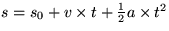
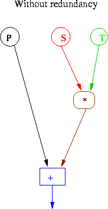
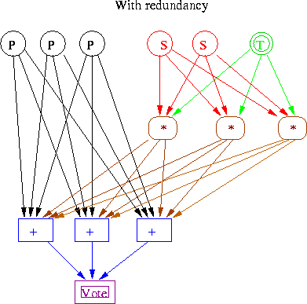
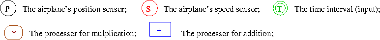

Example: The Survivable Computation of the Position of an Airplane.
| The airplane's next position is decided by
the airplane's current position, the speed, and the
acceleration. More specifically,
 , where s0 is the current position, v the current speed, and a the current acceleration. In the following, we give an example of survivable computation of the airplane's next position (in the example, we assume that a=0). |
For the case of no redundancy, the airplane's next position can be computed by the following graph (see the left hand side). In the case of a malicious environment, redundancy is needed in the computation (see the right hand side).
|

|
 |

Important Observation: In this example, there are three position sensors, two speed sensors. It is easy to see that the above graph with multi-colored edges is three-connected in the classical graph theoretical sense. In order for one processor to compute the (intermediate) result, it needs one input from each color. Whence it is only two-connected for the multi-colored graph model. This implies that the above computation graph is only robust against the destruction of two processors (excluding the time input and the output), but not against malicious errors.
Note: Generally, it is NP-hard to find vertex disjoint solution graphs in a multi-color graphs. For details, see Results